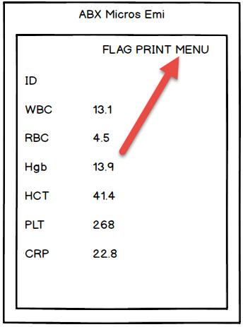
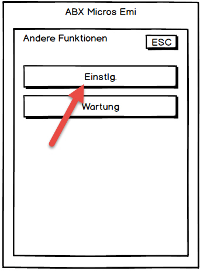
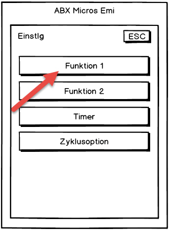
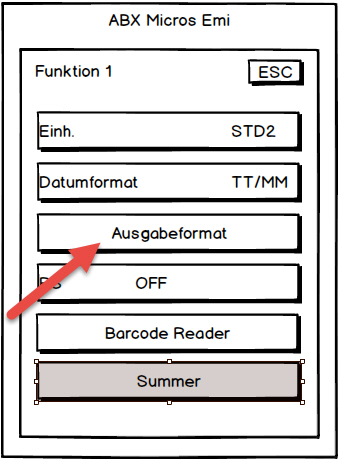
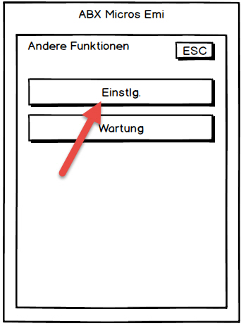
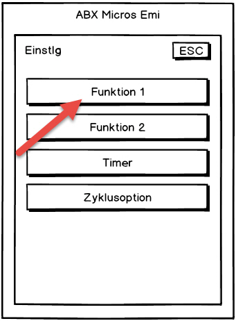
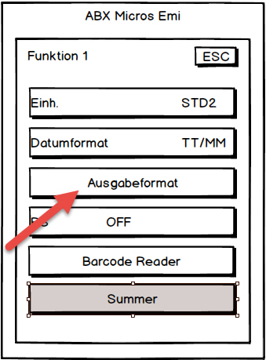

ABX Micros Emi
Contents
Einführung
Dieses Plugin dient dazu, das Laborgerät ‘ABX Micros Emi’ an Elexis anzubinden. Mit diesem Plugin können die vom ABX Micros gemessenen Laborparameter direkt in die Elexis-Datenbank eingelesen werden.
- ACHTUNG: Aktueller Bug: Bei der ersten Übermittlung nach der Aktivierung der Schnittstelle meldet das ABX Micros jeweils einen Netzwerkkommunikationserror, dieser kann bestätigt werden, ab der zweiten Übertragung übermittelt das Gerät ohne Fehler. Um die Werte nochmals zu übertragen, können diese einfach nochmal gedruckt werden.
- Bei Änderungen an der IP-Konfiguration am ABX muss das Gerät zwangsläufig heruntergefahren werden und vom Strom getrennt werden! Ansonsten werden die Änderungen nicht gespeichert!
Voraussetzungen
Dieses Plugin benötigt Elexis V3.0.25 oder höher sowie ein ABX Micros Emi. Ausserdem wird ein PC sowie ein freier Netzwerkanschluss zur Verbindung benötigt.
Installation und Konfiguration
Installieren Sie das Plugin auf dem Labor-PC wie gewohnt (Es kann direkt über den Medelexis-Webconfigurator installiert werden). Verbinden Sie dann bei ausgeschalteten Geräten den ABX Micros mit dem Netzwerk.
Datenübertragung am ABX Micros Emi einschalten
Die Schnittstelle des ABX Micros Emi muss zunächst aktiviert und konfiguriert werden. Genaueres dazu finden Sie im Handbuch. Kurz zusammengefasst:

 


=> Wählen Sie als Ausgabeformat ASTM U (unidirektional) und kehren Sie zurück zu den Einstellungen



=> Wählen Sie als Ausgabeformat ASTM U (unidirektional) und kehren Sie zurück zu den Einstellungen
Konfigurieren Sie das Gerät entsprechend den Einstellungen des Systemadministrators Die IP des Host-PCs ist die des Laborrechners. Dieser sollte eine fixe IP erhalten, da sonst bei einem Netzwerkausfall das Gerät anschliessend an eine falsche IP Adresse übermittelt.
Elexis Konfiguration
Starten Sie Elexis und gehen Sie dort zu Datei-Einstellungen-Datenaustausch-ABX.
Hier stellen Sie den Netzwerkport ein (Std. 7000) und die Dateiübertragung auf Netzwerk.
Verwendung
Wenn das Plugin korrekt installiert ist, erscheint in der Labor-View automatisch ein neuer Toggle-Button ‘ABX’. Klicken Sie auf diesen Knopf um die Verbindung mit dem Gerät herzustellen. Der Button muss nur einmal geklickt werden und rastet anschliessend ein. Elexis hört dann ständig auf die Werte, die vom ABX übermittelt werden und liest diese automatisch ein.
Im Unterschied zu anderen Gerätekonnektoren bezieht dieses Plugin die Identifikation des Patienten vom Gerät. Es muss also in Elexis nichts weiter eingegeben werden. Das Plugin kann den ganzen Tag auf Empfang bleiben und trägt alle in dieser Zeit eintreffenden Daten in Elexis ein. Es ist daher wichtig, dass die Patientenidentifikation jeweils am Gerät korrekt eingetragen wird.
Plattformen
Dieses Plugin wurde unter Windows 7, 8 & 10 getestet.
Troubleshooting
Wichtig bei der Kommunikation mit dem Gerät:
- Stellen Sie sicher, dass der Laborcomputer eine fixe IP-Adresse hat
- Stellen Sie sicher, dass das ABX Micros Emi eine freie IP-Adresse zugewiesen bekommt
- Auf dem Rechner, der die Werte empfängt muss der TCP Port 7000 in der Windows-Firewall geöffnet werden, da ansonsten die Werte nicht übertragen werden können.
- Bitte beachten, dass bei Änderungen in der IP Konfiguration des Geräts, das Gerät heruntergefahren und vom Strom getrennt werden muss. (Reststrom abbauen ca. 15sek warten) Ansonsten werden die Einstellungen vom Gerät nicht übernommen.
Tipps bei Fehlern
- Versuchen Sie das Gerät vom Laborrechner aus anzupingen (Bspw. ping 192.168.1.50)
- Schalten Sie für die Testübermittlung den Ausdruck des Gerätes aus, dann können jeweils nur die Daten übermittelt werden, ohne Papier zu verschwenden.
- Sie können mit der Software Wireshark www.wireshark.org prüfen, ob das Gerät etwas ins Netzwerk übermittelt.